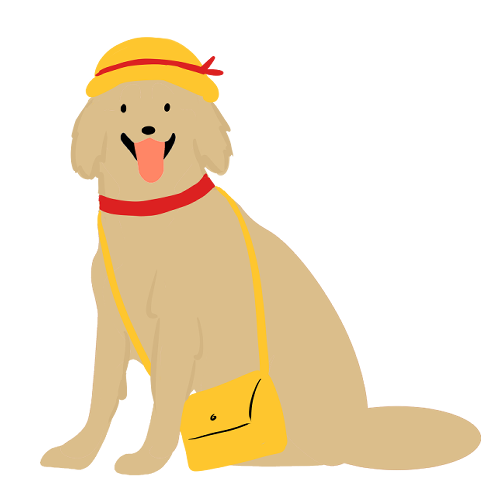
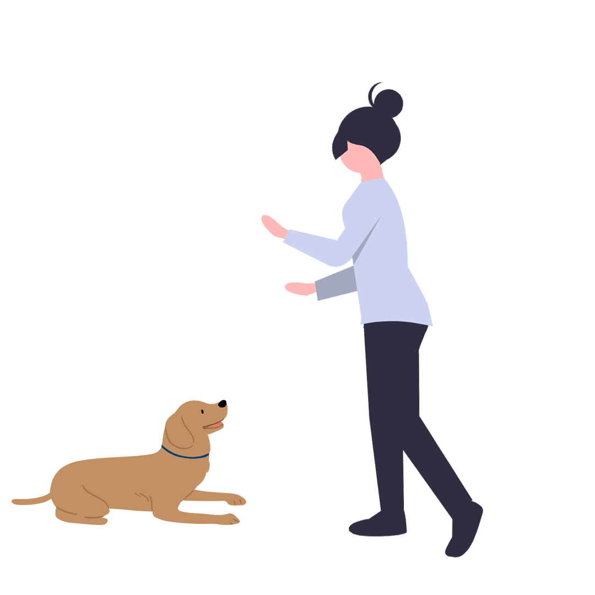

강아지를 부탁해
-
교육
강아지에게 교육은 필수!
인도적인 교육
인도적인 교육이란, 반려견을 하등하게 대하지 않고
사람과 같이 동등한 관계에서 사람 문제행동을 수정하는 것과
같은 방법으로 교육하는 것을 말합니다.
반려견에게 훈련이라는 이유로 강압적으로 대할 것이 아닌
반려견이 스스로 선택할 수 있는 공평한 트레이닝을 해주어야 합니다.
-
종이찢기 훈련법
종이컵 안에 간식을 숨겨두고 구겨줍니다. 구긴 종이컵을 강아지에게 주고
스스로 찾아서 먹게하는 훈련입니다.
코를 많이 쓰는 활동은 감정기복이 심한 아이들을 위한
마음안정에 효과적입니다.
필통놀이 훈련법
빈 필통에 간식을 넣고 필통을 잠근 후에 강아지에게 줍니다.
강아지는 간식을 먹으려고 하지만 필통을 열기엔 힘들어요.
얼마 있다가 강아지는 주인게에 필통을 가져다 줍니다.
그러면 보호자가 필통을 열어서 간식을 주세요.
강아지가 보호자의 도움을 받을 수 있다는 것을
인지시키는 보호자와의 소통훈련 입니다.
-
강아지와 첫 인사 하기
강아지와 첫 인사를 할 때에는 가만히 손을 대어 냄새를 맡게 해줍니다.
먼저 만지면 강아지가 많이 놀란다고 해요.
그리고 훈련을 하면서 간식을 줄 때에도 간식만 줘야하고 먹을 때
만지면 싫어하기 때문에 훈련효과가 감소된다고 합니다.
앉아 훈련법
간식을 통한 행동 교육법인데, 먼저 간식 냄새를 맡게 하고, 손을 들어올립니다.
냄새를 맡다보면 엉덩이가 내려가는데 이때 간식을 주면 됩니다.

-
엎드려 훈련법
엎드려는 간식을 들어올려 먼저 앉게 한 다음 간식을 조금 떼어주고,
남은 간식을 앞다리 사이로 내립니다. 앞다리가 바닥에 닿으면 간식을 줍니다.
올바른 목욕습관 만들기
강아지에게 처음 목욕을 가르쳐 줄 때에는 물놀이처럼 목욕은 재밌는 것이라고
인지를 하게 해줍니다. 물놀이하듯 조금씩 물을 적셔줍니다.
-
적절한 교육
최대한 빨리(생후 약 7~8주) 교육을 시작하는 것이 좋습니다.
생후 7~8주 강아지의 경우 집중력이 낮은 상태이므로
쉬운 훈련부터 시작해야 합니다.
'앉아', '기다려', '일어서' 등의 쉬운 명령어를 알아듣게 하는 것이
강아지 훈련의 좋은 시작점 입니다.
긍정 강화 훈련법 권장
긍정 강화 훈련은 강아지가 긍정적인 훈련을 하였을 때 이를 보상하여,
긍정적인 행동을 지속적으로 유도하는 훈련 방법입니다.
퍼피 & 성견을 막론하고 긍정 강화 훈련번이 권장되나,
생후 7~8주 강아지를 대상으로는 더 더욱 긍정 강화 훈련 방법이 권장됩니다.
-
명령은 몇 번이나 말해야 할까?
명령어는 한 번만 이야기 하는 것이 이상적 입니다.
명령어를 한 번 말한 후에는 간식/사료를 통하여
강아지가 명령된 행동을 하게끔 하는 것을 권장합니다.
만약 명령어를 여러 번 반복하여 말한다면,
강아지는 명령어를 여러 번 들은 후에
명령된 동작을 수행해도 된다고 이해할 것 입니다.
적절한 훈련 시간은?
긴 시간을 훈련하는 것보다 짧게 짧게 여러 번 훈련을 하는 것이 좋습니다.
하루에 최소 15분 이상 훈련 시간을 갖는 것을 권장하며, 이를 여러 횟수로
쪼개서 하는 것이 좋습니다. (예: 3분씩 5회)
훈련을 일상화
훈련을 일상화 하는 것이 좋습니다. 예를 들어 강아지에게 간식을 줄 때, 항상
강아지가 '앉아'를 한 상태에서 줍니다. 이는 단순 훈련 효과가 있을 뿐만
아니라 강아지가 음식을 먹기 전에 기다릴 수 있는 '참을성'을 길러주기 합니다.
훈련을 이와 일상화한다면, 견주와 강아지는 일상에서 더 끈끈한 관계를 형성
할 수 있게 됩니다.